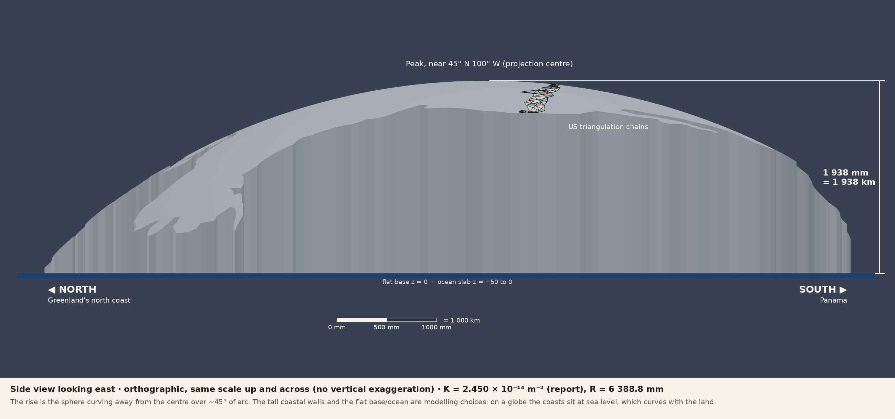
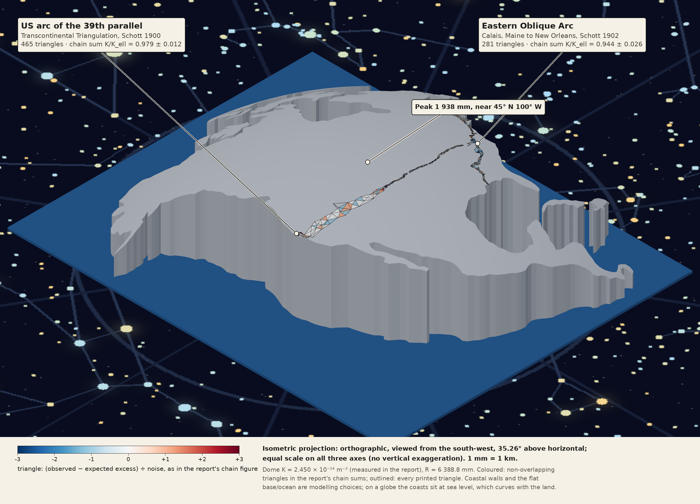
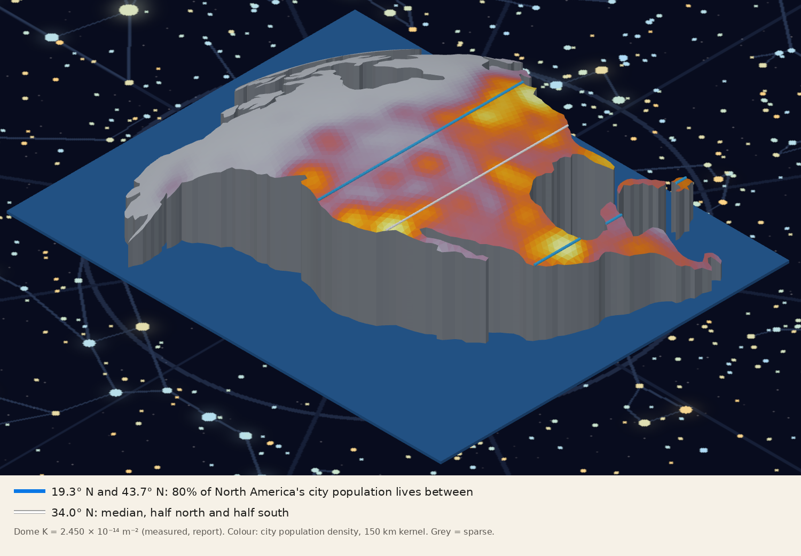
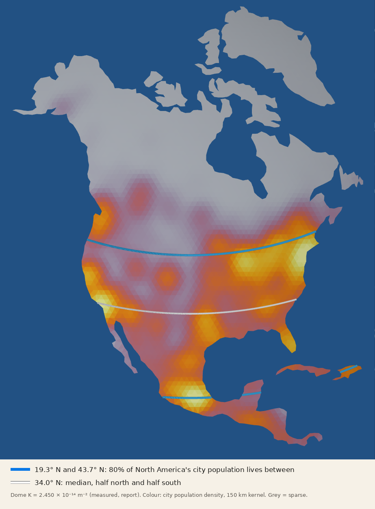
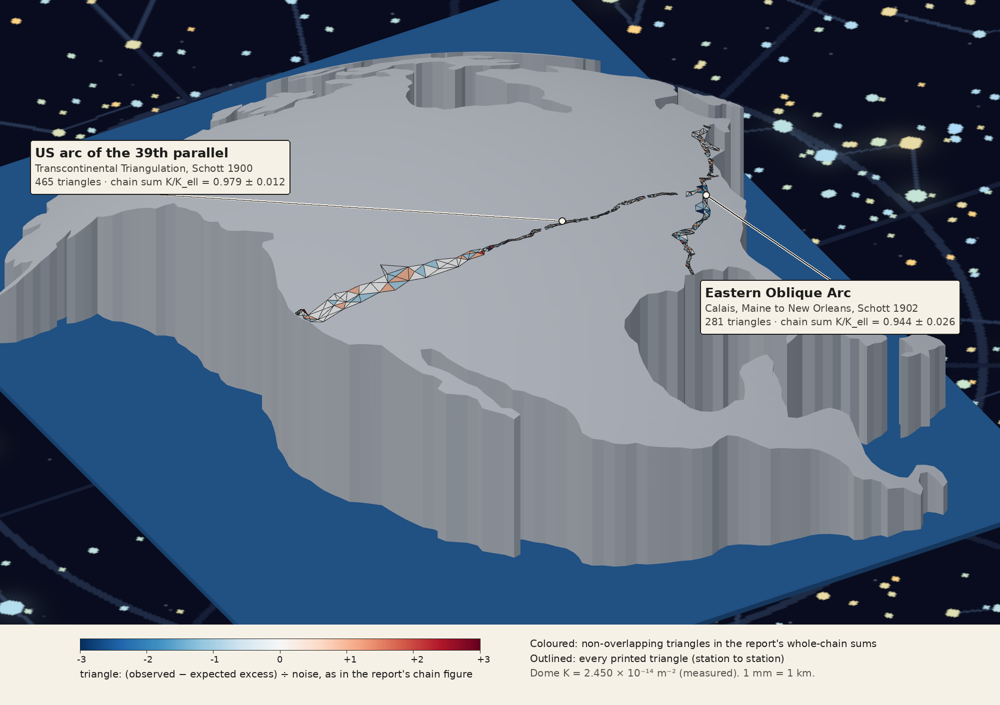
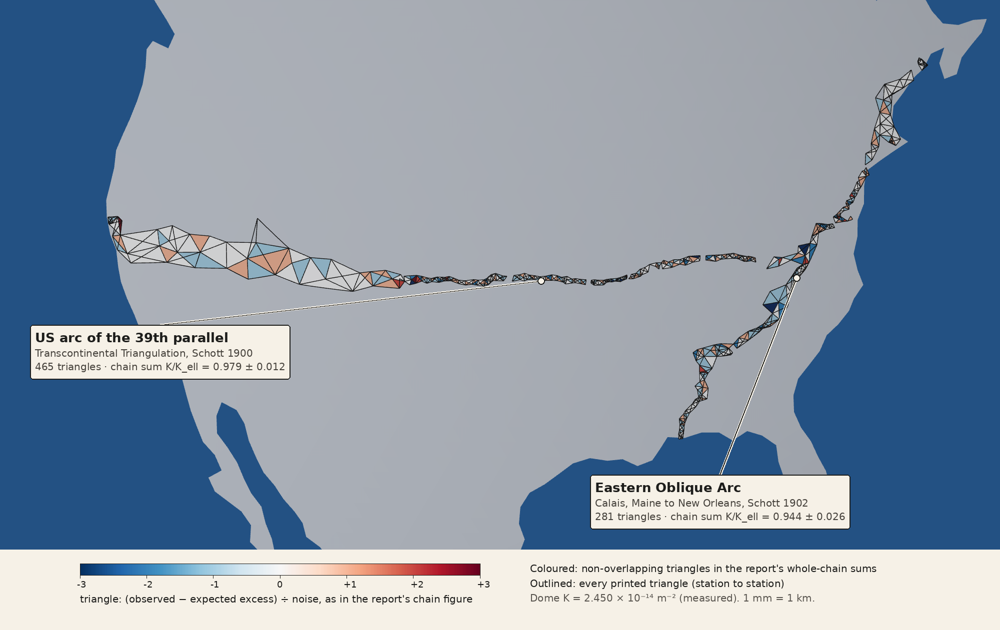
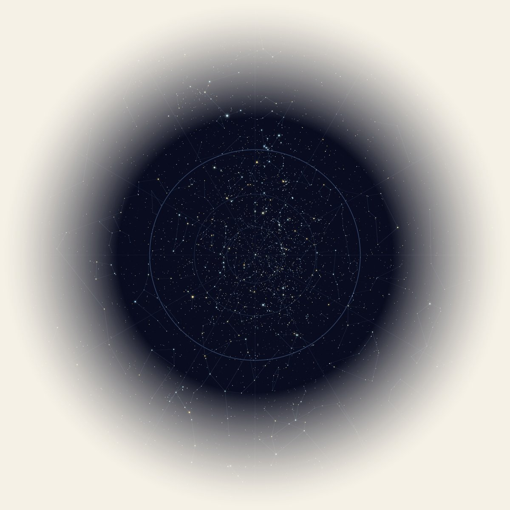

North America on Earth’s measured curvature
A 1 : 1 000 000 model of North America whose top surface has the Gaussian curvature measured in the report from surveyors’ triangles: K = 2.450 × 10⁻¹⁴ m⁻², a sphere of radius 1/√K = 6 388.8 km. The two US triangulation chains the report measured are drawn on it. It sits on a flat ocean layer above a star plane. Drag to turn it.
A continent built on a sphere, not a map
Flat maps of a continent cannot keep the shapes, distances and areas of the ground all at once. Gauss’s Theorema Egregium says why: the curvature of a surface is fixed by measurements made inside it, so a curved surface can’t be flattened without stretching. This model doesn’t flatten. It puts the coastline where it actually sits on a sphere and builds the land up to that sphere, scaled down a million times.
The sphere’s curvature is not a textbook radius. It is the value the report measured from the angles of 391 triangles in historical surveys (1739–1898), using only angles and ground lengths: K = 2.450 ± 0.012 × 10⁻¹⁴ m⁻² (± 0.019 with survey-to-survey scatter). Its radius is 1/√K = 6 388.8 km, with a 1σ range of 6 373–6 404 km.
At this scale that Earth is a ball 12.8 m across, and North America is a cap on it. The middle of the continent stands 1.9 m higher than its far coasts. That rise isn’t exaggerated: it is how much a sphere with the measured curvature curves away over 3 000–4 000 km.
The top of the land is made of flat triangles about 100 km on a side, with every corner on the sphere. The flat triangles let you check the curvature the same way the report measures it from surveyors’ triangles: by angles alone (§3).
Under the land is a 50 mm ocean slab. Under that is the sky, drawn as a single flat plane: a circle of infinite radius carrying a chart of the stars (§6).
Geometry and scale
| Item | Value | Note |
|---|---|---|
| Scale | 1 : 1 000 000 | 1 mm = 1 km |
| Gaussian curvature K (set) | 2.450 × 10⁻¹⁴ m⁻² | measured in the report, ± 0.012 (± 0.019 with survey scatter) |
| K in model units | 2.450 × 10⁻⁸ mm⁻² | same surface, 1 mm = 1 km |
| Sphere radius R = 1/√K | 6 388.8 mm | 1σ: 6 373–6 404 mm |
| For comparison: ellipsoid 1/(MN), report’s triangles | 2.462 × 10⁻¹⁴ m⁻² | measured K / ellipsoid = 0.995 ± 0.005 |
| For comparison: mean-radius sphere, R = 6 371 km | 2.464 × 10⁻¹⁴ m⁻² | same shape, 0.28% smaller: peak 1 934 mm |
| Projection centre | 45° N, 100° W | top of the dome |
| Peak height above base | 1 938 mm | at the projection centre |
| Lowest coastline point | 50 mm | far side of Greenland |
| Footprint | 6 077 × 7 199 mm | mainland, plan view |
| Top triangles, mainland | 4 742 | edges ≈ 100 km along the surface |
How the coastline is placed
Each coastline point is laid out by its distance and direction along the surface from 45° N 100° W (azimuthal equidistant), then lifted onto the sphere: a point at surface distance s from the centre lands at angle c = s/R, at (R sin c) out and (R cos c) up. Distances measured on the dome along great circles from the centre are therefore true to scale. The walls drop straight down to a flat base at z = 0.
Why the measured K changes the size, not the shape
The coastline is placed by latitude and longitude, which are angles. On a sphere, distance along the surface = radius × angle, so the continent’s size comes from the sphere’s size. The measured K (2.450 × 10⁻¹⁴ m⁻²) gives a radius of 6 388.8 km, 0.28% larger than the 6 371 km mean radius. The same angles on a larger sphere make the whole model 0.28% larger: wider, longer, and taller at the peak (1 938 mm instead of 1 934). The shape is identical, because all spheres are the same shape at different sizes. With the coastline fixed by angles, K changes only the model’s overall size, not its proportions.
Is the dome exaggerated?
No. The model uses one scale, 1 mm = 1 km, up and across, so there is no vertical exaggeration; shrinking it to any size keeps the same shape. The rise is the sphere curving away from the centre: the far coasts are about 45° of arc from 45° N 100° W, and 1 − cos 45° ≈ 0.29, so they sit about 0.29 R ≈ 1 850 km below a plane touching the centre. What makes it look higher than a globe is the flat base and flat ocean: on the Earth the coasts sit at sea level, which curves down with the land, so the tall coastal walls here don’t exist.


Coastline and landmasses
Natural Earth 1:50m country outlines for the North American continent. Inlets and capes narrower than about 25 km are rounded off, so the outline is averaged, not detailed. Ten landmasses are separate closed solids: the mainland (Alaska to Panama), Greenland, Baffin, Victoria, Ellesmere, Banks and Devon islands, Newfoundland, Cuba and Hispaniola. Smaller islands and Hawaii are left out.
Curvature from corner angles alone
A flat triangle has no curvature inside it. On a surface built from flat triangles, all the curvature collects at the corners, where the angles meeting at a point add up to less than a full turn. That shortfall is the angle deficit:
It is the report’s rule turned around: there, a triangle’s angle excess divided by its area gives K. Here, the deficit at each interior corner divided by the area that belongs to it (a third of each touching triangle) gives K. Only angles and areas measured on the surface go in.
| Landmass | Interior corners | K from deficits (×10⁻⁸ mm⁻²) |
|---|---|---|
| Mainland | 2 147 | 2.4526 |
| Greenland | 224 | 2.4521 |
| Baffin Island | 24 | 2.4355 |
| Victoria Island | 12 | 2.4450 |
| Ellesmere Island | 9 | 2.2680 |
| All, pooled | 2 423 | 2.4518 |
| K set (report’s measured value) | 2.4500 |
Total deficit: 0.508 01 rad (104 784″) over 20 720 084 mm². The ratio to the K the dome was built with is 1.0007. The small excess comes from treating each corner’s area as a third of its triangles, a standard approximation. The small islands, with only a few interior corners, scatter more.
A band across the middle of the dome


| Population band (city populations) | Latitude | Share |
|---|---|---|
| North America, middle 80% | 19.3° N – 43.7° N | 80% |
| North America, median | 34.0° N | 50% each side |
| North America, between 25° N and 50° N | 75% | |
| World, middle 50% | 13.1° N – 39.0° N | 50% |
| World, median | 29.6° N | 50% each side |
| World, between 20° N and 40° N | 44% | |
| World, northern hemisphere | 85% |
Most people live in a belt of latitude, not spread evenly. On this dome the belt crosses the southern slope, between the peak and the Gulf of Mexico: the US East Coast, the Great Lakes, California and Texas, and the Valley of Mexico. Most of the far north is nearly empty.
These figures count city populations only (1 447 places in North America, 361 million people; 7 342 worldwide, 2.37 billion), from Natural Earth’s populated places with each place’s largest population estimate. Rural populations are left out, so the band is a guide, not a census.
The report’s triangles, back on a curved surface
The two US chains carry most of the report’s result. They are drawn on the dome station to station, from the coordinates in the report’s data file (arcs_parallel_master.kml), placed exactly like the coastline. Every printed triangle is outlined. The non-overlapping triangles used in the report’s whole-chain sums are filled with the report’s colour code: each triangle’s observed excess minus the excess the ellipsoid predicts for its area, divided by the survey’s noise, from −3 (blue) to +3 (red).


| Chain (report’s whole-chain sums) | Triangles drawn | In the sum | Area (km²) | Σ excess observed | Σ expected (ellipsoid) | K / Kell | R (km) |
|---|---|---|---|---|---|---|---|
| US arc of the 39th parallel (Schott 1900) | 465 | 241 | 322 644 | 1 604.3″ | 1 638.3″ | 0.979 ± 0.012 | 6 441 |
| Eastern Oblique Arc (Schott 1902) | 281 | 114 | 112 582 | 539.5″ | 571.8″ | 0.944 ± 0.026 | 6 561 |
These are the report’s whole-chain figures (its chain sums over non-overlapping triangles), not the dome’s K. The dome uses the report’s headline value, K = 2.450 ± 0.012 × 10⁻¹⁴ m⁻², from the triangle-by-triangle fit over all nine surveys. The report reads the chains’ low ratios as a small uniform offset in the printed angle sums (about −0.15″ per triangle) rather than a different curvature.
How they are built
Outlines are rods 4.4 mm across (4.4 km at true scale) along each station-to-station line, 3.6 mm above the sphere. Tiles are the triangles themselves, 3.5 mm thick, on the sphere. In the SolidCraft file each chain is one outline body plus one tile body per colour step (−3 … +3); the STL holds the same geometry without colour. Built by chain_overlay.py.
Ocean, and the sky as a circle of infinite radius
| Layer | Size (mm) | Height (mm) | Curvature K |
|---|---|---|---|
| Land (10 bodies) | 6 077 × 7 199 mainland | 0 to 1 938 | 2.450 × 10⁻⁸ mm⁻² (measured) |
| Ocean slab | 6 900 × 8 600 × 50 | −50 to 0 | 0 (flat) |
| Star plane | a single plane, drawn as an 80 000 disc | −50 | 0 (circle of radius → ∞) |
Why a circle of infinite radius
A circle of radius r curves by 1/r. A sphere of radius R has Gaussian curvature 1/R². Let the radius grow without limit and both go to zero: a circle of infinite radius is a straight line, and a sphere of infinite radius is a plane. So the star layer is not a slab with thickness but a single plane, the flat limit of the same family of surfaces the land sits on.
The sky laid flat: stereographic projection
The sky is a sphere around the observer, so putting it on a plane is the same problem as a flat map of the Earth: by the Theorema Egregium it can’t be done without stretching. The chart uses the stereographic projection, which keeps the shape of small figures (angles are preserved) and lets sizes grow away from the centre. Projected from the south celestial pole, the whole sky lands on an infinite plane:
| Declination δ | r (sky radii) | Place on the disc |
|---|---|---|
| +90° (north celestial pole, near Polaris) | 0 | centre |
| 0° (celestial equator) | 2.000 | 0.414 of the drawn radius |
| −15° (start of the fade) | 2.607 | 0.540 |
| −45° (edge of the drawn disc) | 4.828 | 1.000 |
| −90° (south celestial pole) | ∞ | at infinity |
A plane can’t be drawn to infinity, so the chart is drawn to −45° on a disc 80 m across (centred under the model at z = −50 mm) and fades out from −15° to the edge, where the plane carries on to the south celestial pole at infinity. The scale of the sky is decorative: it isn’t tied to the dome’s 1 : 1 000 000.
The chart is shown as seen looking up from inside the sky, so it reads mirror-imaged from above. The stars are the roughly 5 000 brighter than magnitude 6 in the Yale Bright Star Catalogue, sized by brightness and coloured by temperature, with constellation lines and circles at declinations 60°, 30° and 0°.

Everything in this folder
| File | What it is |
|---|---|
| NorthAmerica_EarthDome_K2.450.stl | The 10 landmasses, the ocean slab and the two US chains, mm, binary STL (no colour; the star plane is an image, so it isn’t in the STL) |
| viewer_scene.glb | The same land, ocean and chains with colours, for the viewer on this page |
| chain_overlay.py, chain_overlay.json | Builds the chain overlay (§5) and its per-chain numbers |
| NorthAmerica_EarthDome_K2.450.solidcraft | SolidCraft design: land, ocean, the US chains as coloured bodies, the star plane as an image canvas at z = −50 mm, ocean_thickness and K_measured parameters |
| na_dome_mesh.py | Rebuilds the land; --K sets the curvature (default 2.450e-14 m⁻², the report’s value), --tri the triangle size (km), --base the lowest coast height (mm) |
| check_deficit.py, deficit_check.json | The corner-angle check of K in §3 and its output |
| mesh_params.json | K, R, lift and triangle size used for this build |
| pop_scene.py | Population colouring, latitude bands and the figures in §4 |
| starplane.png | The stereographic star plane (transparent edge) |
| starplane.py | Draws the star plane; needs d3-celestial stars.6.json and constellations.lines.json |

The numbers here are fallible measurements on a model, good to the precision stated. The model’s K is set, not measured; the corner-angle check confirms the mesh carries it.
Revision history
| Rev | Date | Commit | Change |
|---|---|---|---|
| 1 | 2026-10-23 | 2ef24ea, c8f2e28 | First model on a mean-radius sphere (R = 6 371 km, K = 2.464 × 10⁻¹⁴ m⁻²): faceted land, 50 mm ocean slab, 16 m star slab with a star-map decal. Model page with a rotatable STL viewer, the angle-deficit check and the population band. |
| 2 | 2026-10-23 | 5d0c52c | Population figures redrawn as an isometric view and a flat overhead view. |
| 3 | 2026-10-23 | a036b53 | Star slab replaced by a single plane: a stereographic chart of the sky, with the note on the circle of infinite radius (1/R² → 0). |
| 4 | 2026-10-23 | dcda6da, c41242a | Rebuilt from the ground up on the report’s measured curvature, K = 2.450 ± 0.012 × 10⁻¹⁴ m⁻² (R = 6 388.8 km): new meshes, SolidCraft file, STL, figures and numbers; mean radius kept only as a comparison. Added why K changes the model’s size, not its shape. |
| 5 | 2026-10-24 | 9a63e4a | US triangulation chains (39th parallel and Eastern Oblique) added to the SolidCraft model, the STL and the viewer, with the report’s colour code; isometric and top-down chain figures (§5); this revision history. |
| 6 | 2026-10-28 | this revision | Side view looking east and a true isometric projection with the survey chains, with a note that the dome is not exaggerated (§2). |
Sources
- Report: Theorema Egregium: curvature measured from surveyors’ triangles. K = 2.450 ± 0.012 × 10⁻¹⁴ m⁻²; ellipsoid 1/(MN) = 2.462 × 10⁻¹⁴ m⁻² on the same triangles.
- Coastlines: Natural Earth,
ne_50m_admin_0_countries, continent “North America” (public domain), via nvkelso/natural-earth-vector. - Populations: Natural Earth,
ne_10m_populated_places_simple, fieldpop_max. - Triangulation chains: Schott, C. A., The Transcontinental Triangulation and the American Arc of the Parallel, USC&GS Special Publication No. 4, 1900; Schott, C. A., The Eastern Oblique Arc of the United States and Osculating Spheroid, USC&GS Special Publication No. 7, 1902; as transcribed and checked in the report’s
arcs_parallel_master.kmlandtriangles_rule.csv. - Stars: Yale Bright Star Catalogue, mag ≤ 6, declination ≥ −45°, and constellation lines, via ofrohn/d3-celestial.
- Curvature: K = 2.450 ± 0.012 × 10⁻¹⁴ m⁻², the headline result of the report (391 triangles, rule fixed before the run). R = 1/√K = 6 388.8 km. The mean radius 6 371 km is quoted only for comparison.
- Theorem: Gauss, Disquisitiones generales circa superficies curvas (1827), Arts. 12 and 20.